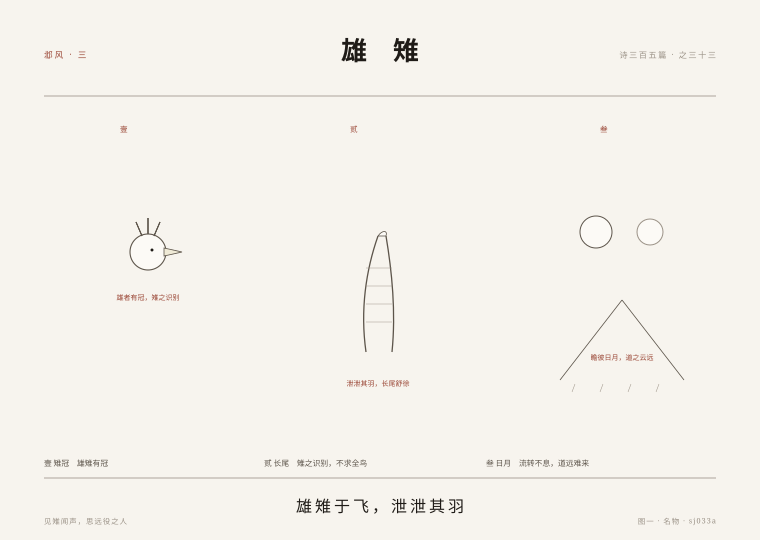
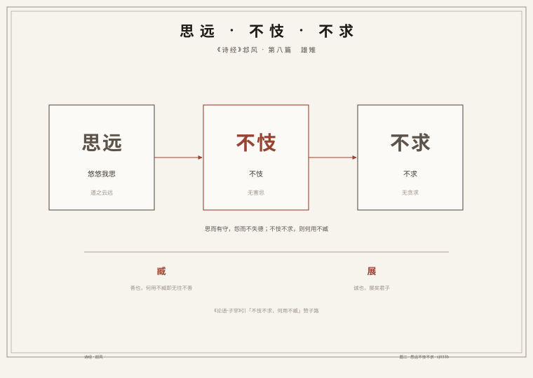

第三十三篇 雄雉
邶风 · 之三 SJ033
朗读 · 普通话
依经文正文朗读，句读从文；不配乐、不改速、不加拖腔。全库同一音色（豆包 TTS），非播音员录制。
一 解题
诗三判：
- 谁在说：一个思念远役之人的人（一说妇人思夫）。前二章见雉而思，三章追道远之叹，四章忽然转而论德：劝勉（或自守）以不忮不求。
- 说什么事：雄雉飞舒，羽翅缓张；我这怀想，是自招阻隔。雉鸣上下，君子真堪思念，使我心劳。望日月流转，悠悠我思；路既云远，何时能来？凡百君子，若不知德行——不害人、不贪求，何往而不善？
- 为何编在此：《击鼓》写征役之绝，此篇写远役之思；同为别后，彼从军嗟阔，此在家怀人。末章由思及德，收束本卷：怨而不失德，是邶风这一批诗的底线。
《毛序》：「《雄雉》，刺卫宣公也。淫乱于上，而役于下，大夫久役于外，其家国人思之而作是诗。」——以为久役于外，家室思之。
朱子《诗集传》：「妇人念其夫之久役于外，而作此诗。」——朱子从室家思夫。
本库的看法：这首诗的骨在思远役者，终以「不忮不求」自守，怨而不失德。
前三章写思：见雉闻声，道远不来；第四章不叹不来，反落笔于德行——不忮害、不贪求，方能往而不善者寡。思虽深，人不陷于怨谤；这是此篇与《日月》《终风》一味缠怨处不同：怨而有守。
二 经文
第一章
雄雉于飛，泄泄其羽。我之懷矣，自詒伊阻。
第二章
雄雉于飛，下上其音。展矣君子，實勞我心。
第三章
瞻彼日月，悠悠我思。道之云遠，曷云能來？
第四章
百爾君子，不知德行。不忮不求，何用不臧。
分章：毛传、朱子皆四章，章四句。一、二章以雄雉起兴；三章日月道远；四章转入德行。前三章言情，末章言德，章法由内出外。
三 韵读
| 一 |
羽、阻 |
魚部 |
| 二 |
音、心 |
侵部 |
| 三 |
思、來 |
之部 |
| 四 |
行、臧 |
陽部 |
一章魚部平舒，状雉羽缓飞；二章侵部闭口，心劳；三章之部长而问远；四章陽部开阔，落到「臧」善。全篇落脚声是「何用不臧」——守德则无往不善。
四 字义与名物
- 雄雉——雄野鸡。雉，野鸡，尾长而有冠。
- 泄泄（yì
yì）——舒徐之貌，鼓翼舒缓。不是「泄气」。
- 羽——羽翼。
- 懷——思念。
- 詒（yí）——遗，留给、招致。不是「欺骗」。
- 伊——是。
- 阻——阻隔。
- 下上其音——鸣声忽高忽低。
- 展——诚，确实。
- 君子——指所念之人。
- 實勞我心——实在使我心忧劳。
- 瞻彼日月——望那日月（流转不息）。
- 悠悠——绵长不绝。
- 云——语助。
- 曷——何，何时。
- 百爾——凡百，你们这些。
- 德行——有德之行。
- 忮（zhì）——害，忌恨。
- 求——贪求。
- 何用——何以，凭什么。
- 臧（zāng）——善。
五 今译
第一章
雄野鸡飞起来，翅膀舒徐地张。我这怀想啊，是自己招来了阻隔。
第二章
雄野鸡飞起来，鸣声忽高忽低。真是那位君子，实在使我心劳。
第三章
望那日月来去，悠悠长长我在思。道路既然遥远，何时才能回来？
第四章
你们这些君子啊，要懂得德行。不害人、不贪求，何往而不善？
译注：「泄泄」译舒徐鼓翼之貌；「诒」译遗留、招致；「伊阻」即「是阻」，这份阻隔；「展」译诚、确实；「忮」为害、忌，「求」为贪求；「臧」译善。
六 章旨
一章：见雉而自招其阻。雉飞舒缓，人怀难释，阻隔是自己担着。
二章：闻声而心劳。雉鸣上下，君子可念，劳心不已。
三章：叹道远不来。日月流转，思长道远，归期难问。
四章归于德行。不忮不求，乃能常善；思而不失其守。
一、二章托物起兴，物是雉，情是思；三章推到日月与道路；四章忽然从私人怀想提到公中德行。前三章之思，由末章之守收住：可以劳心，可以叹远，不可以忮害贪求。
此即本卷「远役之思」而能以德自处，与召南之守相呼应，而处境已变。
七 诗教
- 赋：前二章见雉闻声，即物即情；三章直陈道远之思；四章议论德行，赋而兼风。
- 观：可观一「守」。思人而不妒、不贪、不谤，观其德行所立；末章「不忮不求」是观人之标尺。
- 群：所思是远役之君子；末章「百尔君子」推开到同列之人，由一人之思及一群之德。
- 怨：有怨，怨道远、怨不来；怨止于此，不迁怒、不忮害，末章以德行自宽。
八 分寸与边界
- 不可把「泄泄」解作「泄气」「泄散」。泄泄是鼓翼舒徐之貌，写雉飞从容。
- 不可把「诒」解作「欺骗」。诒通「遗」，是遗留、招致；自诒即自招。
- 不可把「伊阻」解成「伊人阻隔」之类。伊是「是」，伊阻即这阻隔。
- 不可把「求」解作一般「追求」。求指贪求、奢求；与忮（害忌）对举，是德行上的两种毛病。
- 不可把末章读作讥刺众君子无德。诗是正面立说：不忮不求则善；讥贬之意须看上下文，本库取勉励与自守。
九 存疑
- 所思为谁：毛序以为大夫久役，国人思之；朱子以为妇人思夫；一说朋友相念。本库取「思远役者」，不坐实夫妇。
- 末章对谁而言：一说劝勉远役之君子，一说自诫，一说刺当世诸臣。本库取正面立德。
- 「自诒伊阻」之阻：一说阻隔在路，一说阻隔在心。本库两存，取人远而心隔。
- 「展矣君子」：展，诚；一说「展，作」（思念作君子）。本库从诚。
- 「忮」「求」所指：忮为忌害，求为贪求；一说求为「求财」，一说求为「求全」。本库从忌害与贪求。
十 跨典
- 《论语·子罕》：「子曰：衣敝缊袍，与衣狐貉者立，而不耻者，其由也与？『不忮不求，何用不臧？』子路终身诵之。」——孔子直引此篇末章赞子路：不忌害、不贪求，故能落落自处。《诗》之德教，于此见其被孔子取义。
- 《邶风·燕燕》「下上其音」——「下上其音」一语复用；彼送别听燕，此思远见雉。
- 《邶风·击鼓》「不我以归，忧心有忡」——同卷征役之思；彼军中嗟绝，此室家怀远。
- 《鄘风·载驰》「女子善怀，亦各有行」——思而有行、怀而有德；与此篇「思而不失德」同旨。
- 《礼记·表记》「君子不自大其事，不自尚其功」——不忮不求之德，即去忌与贪；可与末章对读。
十一 双卡与图
双卡五对：
| 泄泄（舒徐鼓翼） |
泄气（误训） |
| 诒（遗、招致） |
欺骗（误训） |
| 伊阻（是阻隔） |
伊人阻隔（误训） |
| 忮（害忌）／求（贪求） |
忌与贪（德病） |
| 思而有守 |
怨而失德 |

图一 · 雄雉·长尾冠羽·日月道远 名物图

图二 · 思远—不忮—不求 义理图
读图三处：
- 雉用长尾与冠，不求全鸟写实：雄雉识别在长尾与冠；名物图取三处特写——冠羽、舒展之长尾、鼓翼之羽，不画整只雉。
- 日月与远路：三章「瞻彼日月」「道之云远」，图上日月并转，一线道路伸向远处。
- 义理三格以德收尾：思远—不忮—不求，箭头由情入德；末尺标出「何用不臧」，见守德则善。